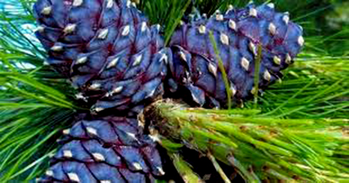
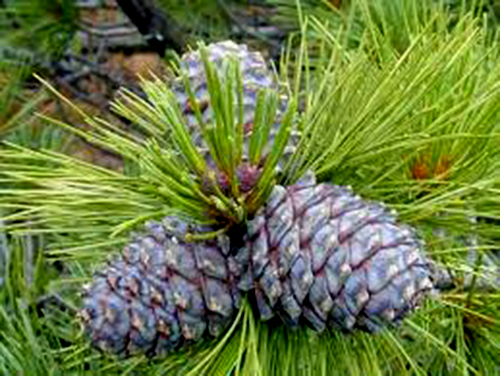
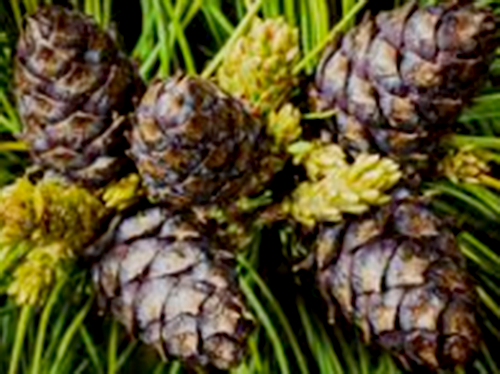
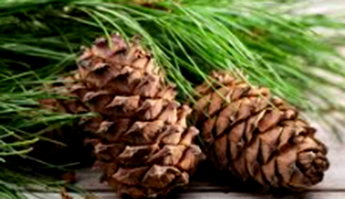

History of Siberian Pine

The wood of the Siberian Fir is used as timber and in carpentry and boat building.
Siberian Pine essential oil has a characteristic smell reminiscent of Christmas trees and sweets.
Pinus sibirica, or Siberian pine, in the family Pinaceae is a species of pine tree that occurs in Siberia from 58°E in the Ural Mountains east to 126°E in the Stanovoy Range in southern Sakha Republic, and from Igarka at 68°N in the lower Yenisei valley, south to 45°N in central Mongolia.
Distribution of Siberian Pine

In the north of its range, it grows at low altitudes, typically 100–200 m, whereas further south, it is a mountain tree, growing at 1,000-2,400 m altitude. It often reaches the alpine tree line in this area. The mature size is up to 30–40 m height, and 1.5 m trunk diameter. Its maximum lifetime is 800–850 years.
Description of Siberian Pine
Pinus sibirica is a member of the white pine group, Pinus subgenus Strobus, and like all members of that group, the leaves ('needles') are in fascicles (bundles) of five, with a deciduous sheath. They are 5–10 cm long. Siberian pine cones are 5–9 cm long. The 9–12 mm long seeds have only a vestigial wing and are dispersed by spotted nutcrackers.
Siberian pine is treated as a variety or subspecies of the very similar Swiss pine (Pinus cembra) by some botanists. It differs in having slightly larger cones, and needles with three resin canals instead of two in Swiss pine.
Like other European and Asian white pines, Siberian pine is very resistant to white pine blister rust (Cronartium ribicola). This fungal disease was accidentally introduced from Europe into North America, where it has caused severe mortality in the American native white pines in many areas, notably the closely related whitebark pine. Siberian pine is of great value for research into hybridisation and genetic modification to develop rust resistance in these species.
Cultivation

Siberian pine, Pinus sibirica, is a popular ornamental tree in parks and large gardens where the climate is cold, such as central Canada, giving steady though not fast growth on a wide range of sites. It is very tolerant of severe winter cold, hardy down to at least –60 °C, and also of wind exposure.
The seeds are also harvested and sold as pine nuts, which in Russia are marketed as Cedar nuts (Russian: Кедровые орехи).
Benefit of Siberian Pine

The wood has many uses, which we can highlight are logs, which are used for making posts, or sawn wood, which is used in carpentry for the manufacture of furniture, musical instruments, utensils, plates, boxes, and even for wood carving.